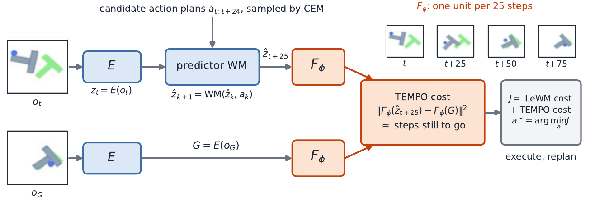
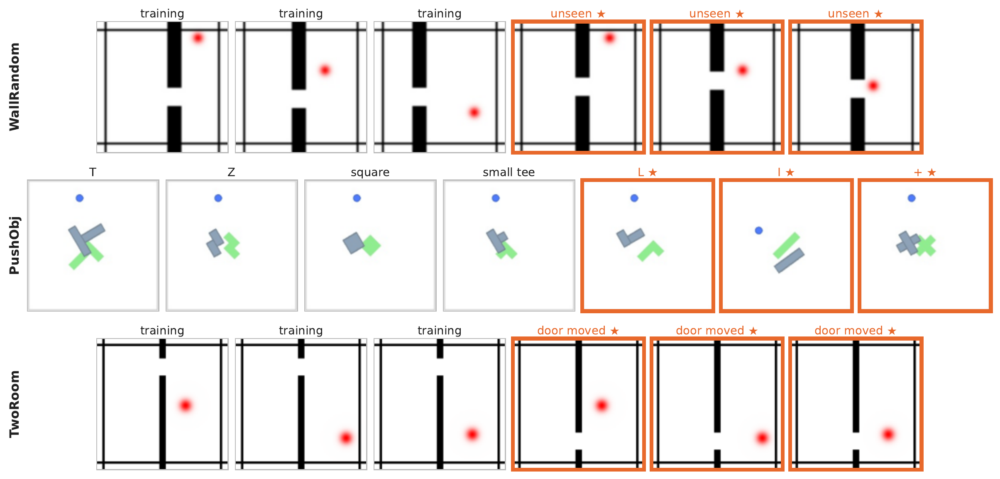

1
A latent world model predicts what happens next, but its planning cost cannot tell how far the goal is. TEMPO teaches it, without touching the model.
The problem
Latent world models like LeWM and PLDM pick the plan whose imagined end state looks most like the goal. Up close that works. Move the goal a few plans away and success collapses.
Latent distance asks
"How much does your end state look like the goal?"
Several plans away, the best-looking state is pressed against the wall, dozens of steps from the goal.
TEMPO asks
"How many steps are you from the goal?"
Every short plan is ranked by how much of the task it leaves, so the chain of plans follows the real route.
The collapse comes from the cost the planners share, not from any one world model. So we fix the cost and leave the model alone.
The method
Same start, goal and frozen LeWM model; only the planning cost differs

LeWM's frozen encoder $E$ and predictor $\mathrm{WM}$ are unchanged and nothing is decoded. TEMPO adds the map $F_\phi$ (orange) and scores each CEM candidate by how many steps its end state still is from the goal.
A tiny network learns a distance that counts environment steps.
Details$F_\phi$, a two-layer MLP on the frozen 192-d latent, is trained so that the distance between two frames of the same episode equals the steps between them, one unit per 25-step plan: targets $k/\kappa$ with $\kappa = 25$, up to $75/\kappa = 3$. Pairs more than 75 steps apart are only pushed at least 3 units apart, so a state beyond three plans never looks closer than one within range.
Add that distance to the planner's usual latent cost.
DetailsThe planner minimises
with $w = 0.5$. The latent term keeps the fine positioning manipulation needs; the temporal term orders plans by how far they still are from the goal.
Same frozen model, same search. Nothing else changes.
DetailsSame frozen world model, same CEM, same horizon, same replanning. No rewards, policies, success labels or environment state: only the time steps of the trajectories the world model was already trained on.
Results
Eleven environments, from maze navigation to 3D manipulation, evaluated on identical windows one, two and three plans from the goal. Each TEMPO run keeps the planner and changes only the cost it minimises.
Success rate (%), mean over 3 seeds × 5 groups of 50 windows. Wall has no three-plan setting.
| Planner | TwoRoom | Reacher | Push-T | Cube | Scene | Avg. | Δ |
|---|---|---|---|---|---|---|---|
| LeWM | |||||||
| one plan | 87.7±0.8 | 94.7±0.7 | 93.6±1.0 | 74.8±2.4 | 69.6±1.1 | 84.1 | – |
| + TEMPO (ours) | 97.2±0.6 | 95.5±0.7 | 95.1±0.6 | 77.1±1.7 | 71.1±1.1 | 87.2 | +3.1 |
| two plans | 58.5±1.7 | 95.7±0.6 | 49.7±1.3 | 57.9±2.4 | 56.4±1.2 | 63.7 | – |
| + TEMPO (ours) | 99.2±0.3 | 96.8±0.5 | 55.7±1.2 | 58.7±2.0 | 57.9±1.3 | 73.7 | +10.0 |
| three plans | 36.3±2.3 | 89.7±0.4 | 22.0±0.6 | 68.7±1.6 | 48.7±1.3 | 53.1 | – |
| + TEMPO (ours) | 99.2±0.3 | 98.4±0.5 | 28.1±2.0 | 70.4±1.2 | 50.5±1.3 | 69.3 | +16.2 |
| PLDM | |||||||
| one plan | 96.8±0.4 | 93.6±1.0 | 76.1±1.8 | 60.3±2.3 | 56.1±1.8 | 76.6 | – |
| + TEMPO (ours) | 98.9±0.3 | 94.5±1.0 | 90.1±1.2 | 68.7±1.4 | 58.4±1.3 | 82.1 | +5.5 |
| two plans | 82.0±2.0 | 93.6±0.6 | 31.9±1.5 | 48.5±1.7 | 43.6±0.9 | 59.9 | – |
| + TEMPO (ours) | 97.2±0.5 | 98.0±0.4 | 39.5±1.8 | 48.7±1.8 | 45.9±1.2 | 65.8 | +5.9 |
| three plans | 70.5±1.4 | 88.0±0.5 | 11.6±1.3 | 65.6±1.7 | 38.7±1.7 | 54.9 | – |
| + TEMPO (ours) | 95.7±1.1 | 97.7±0.5 | 17.1±1.7 | 66.7±2.0 | 41.1±1.5 | 63.7 | +8.8 |
Cross-room TwoRoom is PLDM's Two-Rooms evaluation, with the goal always in the other room (budgets of 50, 100 and 150 steps). † Wall episodes end at 50 steps, so its two-plan cell uses goal 40 and it has no three-plan cell.
| Planner | Wall† | TwoRoom cross-room | PointMaze M | PointMaze L | Ant-U | Avg. | Δ |
|---|---|---|---|---|---|---|---|
| LeWM | |||||||
| one plan | 67.6±1.4 | 12.0±1.0 | 32.1±1.4 | 28.0±2.0 | 19.7±1.0 | 31.9 | – |
| + TEMPO (ours) | 75.7±2.2 | 46.5±1.2 | 75.7±1.7 | 54.8±1.6 | 21.9±1.1 | 54.9 | +23.0 |
| two plans | 57.7±2.4 | 15.5±1.0 | 17.6±1.0 | 2.9±0.6 | 25.5±1.5 | 23.8 | – |
| + TEMPO (ours) | 65.9±2.2 | 69.6±1.8 | 41.1±2.0 | 21.3±1.2 | 29.6±1.0 | 45.5 | +21.7 |
| three plans | – | 17.1±1.1 | 10.8±0.8 | 0.3±0.2 | 28.1±1.6 | 14.1 | – |
| + TEMPO (ours) | – | 74.5±1.7 | 31.7±1.0 | 6.5±1.0 | 34.0±2.1 | 36.7 | +22.6 |
| PLDM | |||||||
| one plan | 71.2±1.9 | 23.9±1.5 | 22.8±2.1 | 32.3±1.5 | 17.1±1.5 | 33.5 | – |
| + TEMPO (ours) | 82.3±1.7 | 42.5±1.5 | 43.1±1.8 | 48.5±2.9 | 18.5±1.7 | 47.0 | +13.5 |
| two plans | 63.5±2.4 | 35.2±1.7 | 16.8±1.0 | 6.5±0.7 | 24.3±1.1 | 29.3 | – |
| + TEMPO (ours) | 72.5±1.4 | 62.0±1.6 | 26.9±2.1 | 15.1±1.8 | 29.3±1.7 | 41.2 | +11.9 |
| three plans | – | 39.1±1.8 | 8.7±0.8 | 3.1±0.8 | 26.8±1.5 | 19.4 | – |
| + TEMPO (ours) | – | 65.1±1.7 | 16.7±0.8 | 7.1±1.0 | 29.3±1.7 | 29.5 | +10.1 |
Generalisation

Substantially improves the LeWM planner on unseen wall layouts and on the cross-wall test, and both planners three plans out with a moved door.
Improves PLDM on unseen block shapes, and keeps its advantage under blur, colour jitter, a larger agent or a heavier arm.
Improves both planners on RoboCasa Pick-and-Place and Kitchen-Nav with a mobile manipulator, at every goal distance.
Takeaways
@article{moukheiber2026tempo,
title = {How Long, Not How Close: A Learned Temporal Metric
for Planning in Latent World Models},
author = {Moukheiber, Lama and Xue, Haotian and Chen, Yongxin},
journal = {arXiv preprint},
year = {2026}
}